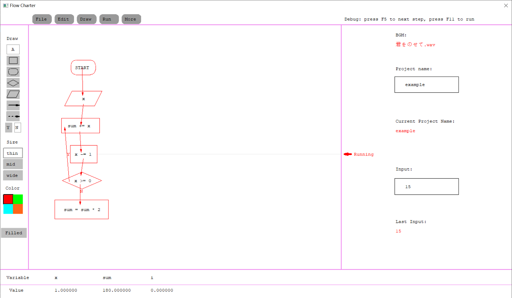
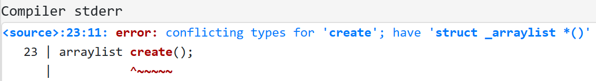
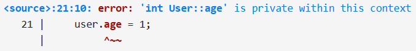
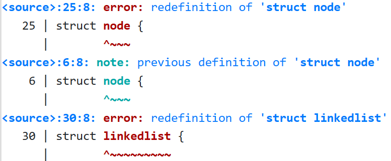

探索 C++¶
约 3201 个字 314 行代码 预计阅读时间 15 分钟
Week 1 - C++ 的诞生与面向对象程序设计¶
0 写在前面¶
===
关于课程¶
- 浙江大学计算机学院朋辈辅学活动
- 试讲
- 发现问题（内容 / 逻辑）
- 互动和答疑
- 进度大约快一周
- 只有 正式课 的录播会上传 Bilibili
- 课程笔记 会放在我的笔记本
===
关于我¶
- 笔记本: https://xuan-insr.github.io/
- Bilibili: 咸鱼暄
===
动机¶
- Push 自己学习和总结 C++
- 逻辑
- 详尽
- 「自举」
===
内容¶
在 C 的基础上学习 C++，包括 C++20 (也许还会有 C++23) 及以前的： - 大多数 language features - 一部分重要的 library features
这个学期内肯定讲不完！但是会优先讲解基础内容
但会 很少包括 代码设计、best practice 等应用层面的内容，因为我也不会！
===
适合谁¶
- 对 C++ 感兴趣而且希望有更多了解的同学
- 面试会被问到很多 C++ 的同学
===
不适合谁¶
内容以 C 为基础，且追求逻辑和详尽，而且会持续较长时间，因此 不适合：
- 没学过 C 语言的同学
- 学过学校 OOP 或者 CS 106L 等课程的同学（可以直接看我的笔记本）
- 只是想通过 OOP 或者在该课程拿个高绩点的同学（不如直接去 OOP 朋辈辅学）
1 抽象 | Abstraction¶
===
Python
a = 123456789012345678901234567890123456789012345678901234567890
C
int a = 123456789012345678901234567890123456789012345678901234567890;
===
抽象数据类型 (ADT, Abstract Data Type)
A set of values + a set of operations
===
机器码 (machine code)
汇编语言 (assembly): 助记符 (mnemonics) 和 labels
非结构化的 (non-structured) 编程语言: 早期 BASIC, Fortran 等
结构化的编程语言: C, C++ 等
===


汇编中并不存在直接完成「分支」的语言结构，而是通过 比较 和 跳转 的组合来完成相应的效果的。
===
早期的 BASIC 等编程语言中即使存在表示分支、循环等含义的关键字，但是由于不存在 代码块 之类的结构，因此分支、循环之类的控制流仍然需要通过 jmp 或者 goto 等含义类似的语句来完成：
10 let a = 6
20 let b = 7
30 if a < b goto 60
40 print(a)
50 goto 70
60 print(b)
70 end
上面的代码中，虽然有 if，但是为了完成分支的效果，仍然需要 goto 来帮助。
这是因为，在这种语言中的代码是以 单条代码 为单位的，而不是像 C/C++ 中以 语句块 为单位的。
===
a = 6;
b = 7;
if (a < b) {
print(b);
} else {
print(a);
}
C 和 C++ 等编程语言都是 结构化编程语言 (structured programming languages) ，因为它们有诸如分支、循环、语句块、函数之类的语言结构。
===
抽象¶
从非结构化到结构化编程，编程语言从「更贴近计算机行为」向「更接近人类思维」的方向迈了一步。
这就是我们所说的 抽象 (abstraction) 。
===
计算机的行为是具体的、与机器和环境高度相关的
而人类思维是更加普遍的、远离细节的
===

2 C++ 的诞生¶
C++ 他爹：Bjarne Stroustrup
===
Simula 提供 类 (class) 、协程和广泛深入的类型检查
「整个程序更像是若干小程序的组合，因而更容易写、理解和排除错误。」
===
类 (class) 的概念来自 面向对象程序设计 (OOP, Object-Oriented Programming)
OOP 是一种 编程范式 (Programming Paradigm)
===
编程范式 | Programming Paradigm¶
编程范式说明了编程语言的不同特点 - 代码组织方式 - 运行时模型 - 语法风格
结构化编程和 OOP 就是按照「代码组织方式」分类的一种编程范式
===
结构化编程在上世纪 70 年代末 80 年代初被广泛认知；90 年代开始广泛认识 OOP
C++ 支持的 泛型编程 (generic programming) 也是一种编程范式
===
Simula 提供 类 (class) 、协程和广泛深入的类型检查
「整个程序更像是若干小程序的组合，因而更容易写、理解和排除错误。」
然而性能很差
「在没有合适工具的情况下绝不去冲击一个问题。」
===
「合适的工具」：
- 类似 Simula 的对程序组织的支持。
- 编译、链接、运行应当像 BCPL 一样高效。
- 应当保证良好的可移植性。
C 语言灵活（通用）、高效，各种平台都有 C 编译器，因此可移植。
===

===
「希望 C++ 一方面能够像 C 一样接近机器，另一方面又能接近需要解决的问题。」
随着抽象程度的增加，程序的性能很有可能受到损失。
C++ 的期望则是，把握这里的「or equal」，即在不损失性能的前提下提供必要的数据抽象。
===
-
1981/12: 设计了 C with Classes 及预处理程序 Cpre，来将 C with Classes 处理成 C
-
1982: C with Classes 是成功的，但是不完全成功
===
从设计一个工具到设计一门语言
C++ 不能带有特别复杂的编译的或运行时的 feature，同时必须能使用原来的链接器，并且产生的代码一开始就要和 C 的一样高效。
===
- 1984/8: Cfront (Release 1.0) - 一个完整的编译器前端，负责对 C++ 程序进行语法和语义的分析和检查
- 源代码会先通过预处理器 Cpp 完成预处理，然后交给 Cfront 检查并生成 C 代码。
- 1989: Release 2.0
- 1991: Release 3.0
- 标准化: C++98, C++03, C++11, C++14, C++17, C++20
===
小结¶
C++ 能够作为一种「高级汇编语言」，即在不付出额外的运行时间和空间代价的前提下支持必要的抽象。
- 「好的低层程序设计语言」: better C
- 「直面高层系统程序设计的要求」: 适应程序迅速增长的规模和复杂性
3 面向对象程序设计 | OOP¶
Object-Oriented Programming
===
编程范式 (Programming Paradigm) 说明了编程语言的不同特点 - 代码组织方式 - 运行时模型 - 语法风格
OOP 是强调封装、继承、多态的一种编程范式。
===
3.1 封装 | Encapsulation¶
===

===
线性表抽象数据类型¶
能够有序地存放若干数据（可以有重）
操作：创建表、获取大小、插入元素、删除元素、访问元素等
===
链表
struct node {
elem* val;
struct node* next;
};
typedef struct node* linkedlist;
linkedlist create();
int size(linkedlist llist);
elem* get(linkedlist llist, int index);
void add(linkedlist llist, elem val);
// ...
===
数组
#define MAX_SIZE 1024
struct arraylist_ {
elem* val[MAX_SIZE];
int size;
};
typedef struct arraylist_* arraylist;
arraylist create();
int size(arraylist alist);
elem* get(arraylist alist, int index);
void add(arraylist alist, elem val);
// ...
===
使用
#include <stdio.h>
#include <stdlib.h>
typedef int elem;
#include "linkedlist.h" // OR: #include "arraylist.h"
typedef struct linkedlist mylist; // OR: typedef struct arraylist mylist;
int main() {
mylist list = create();
add(list, 1);
add(list, 2);
add(list, 4);
add(list, 2);
add(list, 4);
for (int i = 0; i < size(list); i++) {
printf("%d ", *get(list, i));
}
return 0;
}
===
如果想在同一个工程中使用呢？

===
问题出在哪里呢？
===
抽象数据类型 == a set of values + a set of operations
struct 定义 user-defined types
struct == a set of variables (storing values)
===
扩展 struct：现在 struct 不仅能包含 成员变量，还能包含 成员函数 了：
struct node {
elem* val;
struct node* next;
};
struct linkedlist {
struct node* llist;
static linkedlist create();
int size() const;
elem* get(int index) const;
void add(elem val);
// ...
};
===
#define MAX_SIZE 1024
struct arraylist_ {
elem* val[MAX_SIZE];
int size;
};
struct arraylist {
struct arraylist_* alist;
static arraylist create();
int size() const;
elem* get(int index) const;
void add(elem val);
// ...
};
===
「将 数据 和 操纵数据的函数 捆绑在一起」是 封装 (encapsulation) 思想的一部分。
这种扩展后的 struct，在 C++ 中也称为 class，即 类。
===
两个类中的 get 函数实际上分别叫做 linkedlist::get 和 arraylist::get
:: - scope resolution operator
「linkedlist 中的那个 get」
===
对象和类¶
ADT == 值 + 操作
对象 == 状态 + 行为
每个对象都属于一个描述其特性的类，类是一个共享相同结构和行为的对象的集合
===
类是一种（用户自定义的）数据类型
「状态」可以由数据变量表示，「行为」可以由函数来实现
这些变量和函数，是这个类的 成员
程序员可以创建这种类型的变量（称为 对象 或 实例 (instance) ）并操纵这些变量
===
C 语言的思考方式更贴近于机器实现
OOP 在此基础上做了进一步抽象
===
访问控制¶
struct User {
int id, age;
char* password;
bool checkPassword(char* pw); // check if pw == password
// ...
};
===
假如有 struct User user1; (User user1;)：
- 窃取数据：
printf("%s", user1.password); - 篡改数据：
user1.password = str; - 填入非法值：
user1.age = -100;
在类中的成员变量对外部直接可访问的情况下，容易导致信息丢失和逻辑混乱
===
解决方案：access-specifier
public, private, protected
public之后的成员变量和成员函数对外部可见private之后的成员变量和成员函数不能在类外被访问，只能在类的成员函数内访问或调用
===
struct User {
private:
int id, age;
char* password;
public:
bool checkPassword(char* pw); // check if pw == password
// ...
};
===

===
getter & setter
struct User {
private:
int id, age;
char* password;
public:
bool checkPassword(char* pw); // check if pw == password
void setAge(int v) {
if (v >= 0)
age = v;
}
int getAge() { return age; }
// ...
};
===
返回舍入到 10 的 age？
===
这是封装思想的另一部分，即限制对对象的一部分状态和行为的直接访问
部分成员变量可能会被拒绝访问，只能被内部使用（例如 password）
另一部分变量可能会通过类似 getters & setters 被有限制或者经检查地访问（例如 age）。
===
小结¶
封装思想将数据与操纵数据的函数以更加明确的方式绑定在一起，并给予必要的访问控制，从而防止外部随意访问类的成员变量或函数
===
struct 和 class 的区别
struct Foo {
int x;
};
class Bar {
int x;
};
3.2 继承 & 多态 | Inheritance & Polymorphism¶
===
class Point { /* ... */ }; // 用来保存坐标
class Circle {
public:
Point center;
int radius;
void draw() {
// 做一些准备（例如准备画笔）
// 画圆！
// 做一些后续处理（例如重置画笔）
}
};
class Rectangle {
public:
Point center;
int width, height;
void draw() {
// 做一些准备（例如准备画笔）
// 画长方形！
// 做一些后续处理（例如重置画笔）
}
};
===
void draw_prepare() { /* 做一些准备（例如准备画笔）*/ }
void draw_finalize() { /* 做一些后续处理（例如重置画笔）*/ }
class Circle {
public:
Point center;
int radius;
void draw() {
draw_prepare();
// 画圆！
draw_finalize();
}
};
class Rectangle {
public:
Point center;
int width, height;
void draw() {
draw_prepare();
// 画长方形！
draw_finalize();
}
};
===
typedef 不能像 #define 那样取消定义
1 2 3 4 5 6 7 | |
===

===
enum shape_type {
CIRCLE,
RECTANGLE
};
linkedlist_circle lc;
linkedlist_rectange lr;
void drawall() {
for (int i = 0; i < lc.size(); i++)
lc.get(i)->draw();
for (int i = 0; i < lr.size(); i++)
lr.get(i)->draw();
}
void remove(shape_type type, int index) {
if (type == CIRCLE)
lc.remove(index);
else if (type == RECTANGLE)
lr.remove(index);
}
===
```c++ [4|9|16-17|25-26] enum shape_type { CIRCLE, RECTANGLE, TRIANGLE };
linkedlist_circle lc; linkedlist_rectange lr; linkedlist_triangle lt;
void drawall() { for (int i = 0; i < lc.size(); i++) lc.get(i)->draw(); for (int i = 0; i < lr.size(); i++) lr.get(i)->draw(); for (int i = 0; i < lt.size(); i++) lt.get(i)->draw(); }
void remove(shape_type type, int index) { if (type == CIRCLE) lc.remove(index); else if (type == RECTANGLE) lr.remove(index); else if (type == TRIANGLE) lt.remove(index); }
===
### 继承 | Inheritance
<img src="2023-03-01-01-18-45.png" height=700>
<a href="https://commons.wikimedia.org/wiki/File:Method_overriding_in_subclass.svg#/media/File:Method_overriding_in_subclass.svg" style="font-size: 0.6em;">Src</a>
===
**继承** 可以让我们克隆已经存在的类的状态和行为，并在克隆的基础上进行一些增加或修改，从而获得我们需要的类。
我们把被继承的类称为 **基类 (base class)** ，而继承产生的新类称为 **派生类 (derived class)**
<br>
基类也被称为 **父类 (parent class)** 或者 **超类 (super class)** ；派生类也被称为 **子类 (child class / sub class)**
===
```c++
class Shape { // 基类 Shape
private:
void prepare() { /* 做一些准备（例如准备画笔）*/ }
void finalize() { /* 做一些后续处理（例如重置画笔）*/ }
public:
Point center; // 共有的成员变量
void draw() { // 共有的成员函数
prepare();
do_draw();
finalize();
}
virtual void do_draw() = 0; // 要求所有派生类都实现 do_draw()
};
===
class Circle : public Shape { // Circle 继承 Shape
public:
int radius; // 独有的成员变量
void do_draw() {
// 画圆！
}
};
class Rectangle : public Shape { // Rectangle 继承 Shape
public:
int width, height; // 独有的成员函数
void do_draw() {
// 画长方形！
}
};
子类通过 class Circle : public Shape 的语法说明它继承自 Shape，即说明了「 一个 Circle 是一个 Shape 」的逻辑，因此 Circle 类自然包含了 Shape 中的所有状态和行为（即 center 和 draw）。这样，子类就只需要处理自己独有的成员变量和成员函数的实现了。
===
```c++ [1-38|9-11|10|33-37|36|8-12|10|19-21|37|8-12|10|27-29|1-38] class Shape { // 基类 Shape private: void prepare() { /* 做一些准备（例如准备画笔）/ } void finalize() { / 做一些后续处理（例如重置画笔）*/ } public: Point center; // 共有的成员变量
void draw() { // 共有的成员函数
prepare();
do_draw();
finalize();
}
virtual void do_draw() = 0; // 要求所有派生类都实现 do_draw()
};
class Circle : public Shape { // Circle 继承 Shape public: int radius; // 独有的成员变量 void do_draw() { // 画圆！ } };
class Rectangle : public Shape { // Rectangle 继承 Shape public: int width, height; // 独有的成员函数 void do_draw() { // 画长方形！ } };
void foo() { Circle c; Rectangle r; // ... c.draw(); r.draw(); }
===
虽然代码中写的是 `do_draw()`，但是代码运行时会根据调用它的对象的实际类型来决定到底调用 `Circle::do_draw()` 还是 `Rectangle::do_draw()` 。
这种机制就是 OOP 中的 **多态 (polymorphism)** 。
===
我们可以把指向 `Circle` 和 `Rectangle` 的指针当做指向 `Shape` 的指针作为 `list` 中的元素
这种将派生类对象当做基类对象处理的机制叫做 **向上转型 (upcasting)**
这样做的合法性是容易理解的
```c++
typedef Shape elem;
#include "linkedlist.h"
linkedlist list;
void drawall() {
for (int i = 0; i < list.size(); i++)
list.get(i)->draw();
}
===
例如我们想要给所有图形增加「颜色」属性，我们只需要在 Shape 中增加一个字段，并且在 prepare() 中增加设置画笔颜色的代码，必要的话在 finalize() 中增加重置画笔颜色的代码即可。
===
再例如我们想要增加一种新的图形：文本框；并且希望给它增加「画笔粗细」的控制功能，我们不需要对现有代码做任何更改：
1 2 3 4 5 6 7 8 9 10 11 12 | |
===
继承和多态的共同作用，使得代码展现出了非常好的可维护性
===
总结¶
本节中，我们讨论了 OOP 的三个重要思想，即封装、继承和多态
封装 强调「数据」与「操纵数据的函数」的绑定以及必要的访问控制，从而抽象出「类」和「对象」的概念
继承 则进一步刻画出了现实问题中「派生类对象是基类对象」的「is-a relationship」，从而形成「hierarchy of classes」，有助于提高代码重用性
而 多态 则在这种「hierarchy of classes」的结构中提供了进一步的抽象，允许程序员把「判断对象到底是哪个子类」的任务交给计算机，从而能够在代码扩展时不需要修改原有代码就能自动适配新的类型
===
这样，OOP 将类结构化，并使用多态来实现对数据的操控、通过继承扩展代码。
===
如我们之前所说，随着抽象程度的逐步提高，代码的可读性和可维护性也会得到进一步的提升，代码会更接近于程序员对问题的建模，而更少地关注机器实现的细节
当然，与此同时，省略的这些细节也需要语言本身在编译时或者运行时完成具体的实现。
===
不过，如果问题本身并不具有继承的结构，就没有必要强行使用 OOP
在一些情况里，使用单独的类、单独的函数，或者使用组合而非继承，又或者使用泛型编程，可能更加适合
Takeaway¶
- 通过 ADT 和结构化编程的例子理解「抽象」的概念
- 了解 C++ 的发展历程，理解 C++ 的哲学
- 理解封装的两层含义，了解 C++ 对 C
struct的扩展，理解类和对象的概念 - 知道 getter & setter，知道
public和private，知道 C++ 中struct和class的区别 - 理解继承和多态，理解继承适用和不适用的场景
- 了解向上转型的含义及其合理性
创建日期: 2023-02-28
颜色主题调整
评论区~
有用的话请给我个赞和 star => 快来跟我聊天~
快来跟我聊天~